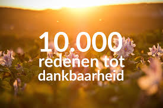
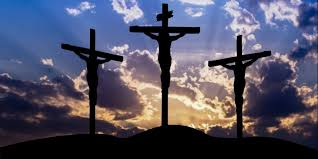
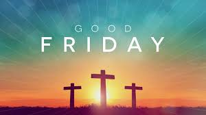
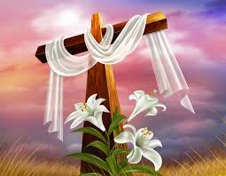
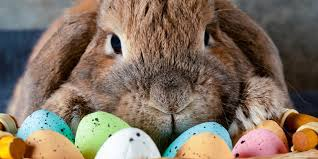
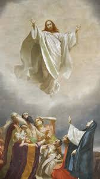
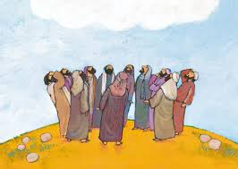
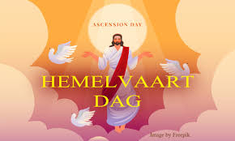
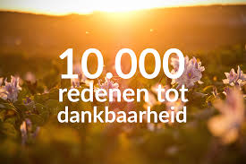
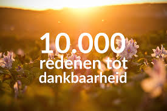

Wat wordt gevierd? Op Dankdag danken christenen God voor de oogst, werk, gezondheid en andere zegeningen van het afgelopen jaar. Het is een moment van reflectie en waardering.
Hoelang duren de feestdag(en)? Eén dag.
Op welke manier wordt het gevierd? Met kerkdiensten en gebed. Gezinnen kunnen samenkomen om dankbaarheid te tonen, en soms zijn er liefdadigheidsacties.
Wat doen mensen op deze feestdag? Ze bidden, bezoeken de kerk, en nemen de tijd om stil te staan bij alles waarvoor ze dankbaar zijn.

Kerst
Wanneer gevierd? 25 en 26 december.
Wat wordt gevierd? Met Kerst vieren christenen de geboorte van Jezus Christus, de Verlosser volgens de Bijbel. Voor veel mensen is het ook een tijd voor familie en samenkomst.
Hoelang duren de feestdag(en)? Twee dagen.
Op welke manier wordt het gevierd? Met kerkdiensten, feestmaaltijden, cadeautjes, kerstdecoraties zoals bomen en lichtjes, en vaak sociale activiteiten met familie en vrienden.
Wat doen mensen op deze feestdag? Ze bezoeken de kerk, versieren hun huis, geven cadeaus, eten samen, en genieten van feestelijke bijeenkomsten.
Biddag
Wanneer gevierd? Tweede woensdag in maart.
Wat wordt gevierd? Tijdens Biddag vragen christenen aan God om zegen over het komende jaar, voor werk, oogst en het dagelijks leven. Het is een dag van gebed en hoop.
Hoelang duren de feestdag(en)? Eén dag.
Op welke manier wordt het gevierd? Met kerkdiensten en gebed. Mensen nemen vaak een pauze van hun dagelijkse werk om te reflecteren.
Wat doen mensen op deze feestdag? Ze bidden, bezoeken de kerk, en wijden tijd aan stilte en bezinning.
Goede Vrijdag
Wanneer gevierd? Vrijdag voor Pasen.
Wat wordt gevierd? Op Goede Vrijdag herdenken christenen de lijdensweg en kruisiging van Jezus Christus. Het is een dag van bezinning, verdriet en dankbaarheid voor Zijn offer.
Hoelang duren de feestdag(en)? Eén dag.
Op welke manier wordt het gevierd? Met sobere kerkdiensten en momenten van stilte. Veel mensen kiezen ervoor om te vasten of sober te eten.
Wat doen mensen op deze feestdag? Ze bezoeken kerkdiensten, lezen Bijbelse teksten, bidden en reflecteren op het lijden en de dood van Jezus.



Pasen
Wanneer gevierd? Eerste zondag en maandag na de eerste volle maan in de lente.
Wat wordt gevierd? Met Pasen vieren christenen de opstanding van Jezus Christus uit de dood. Dit symboliseert overwinning op de dood en hoop op eeuwig leven.
Hoelang duren de feestdag(en)? Twee dagen.
Op welke manier wordt het gevierd? Met feestelijke kerkdiensten, paasontbijten, eieren zoeken, en soms optochten. Het is een moment van vreugde.
Wat doen mensen op deze feestdag? Ze bezoeken de kerk, eten samen, vieren met familie en doen aan activiteiten zoals eieren schilderen en zoeken.

Hemelvaart
Wanneer gevierd? 40 dagen na Pasen, op een donderdag.
Wat wordt gevierd? Op Hemelvaart herdenken christenen de dag dat Jezus Christus naar de hemel opsteeg, 40 dagen na Zijn opstanding. Het markeert het einde van Zijn tijd op aarde.
Hoelang duren de feestdag(en)? Eén dag.
Op welke manier wordt het gevierd? Met kerkdiensten, buitenwandelingen, en soms een vrije dag om te rusten of tijd met familie door te brengen.
Wat doen mensen op deze feestdag? Ze gaan naar de kerk, reflecteren op de betekenis van de hemelvaart, en brengen vaak tijd buitenshuis door.



Pinksteren
Wanneer gevierd? 50 dagen na Pasen, op een zondag en maandag.
Wat wordt gevierd? Met Pinksteren vieren christenen de uitstorting van de Heilige Geest op de discipelen, zoals beschreven in het Nieuwe Testament. Dit wordt gezien als het begin van de christelijke kerk.
Hoelang duren de feestdag(en)? Twee dagen.
Op welke manier wordt het gevierd? Met feestelijke kerkdiensten, zang, en gemeenschappelijke vieringen. Het is een moment van vreugde en hernieuwing.
Wat doen mensen op deze feestdag? Ze bezoeken kerkdiensten, zingen, en vieren met de gemeenschap. Vaak zijn er speciale evenementen georganiseerd.
 
